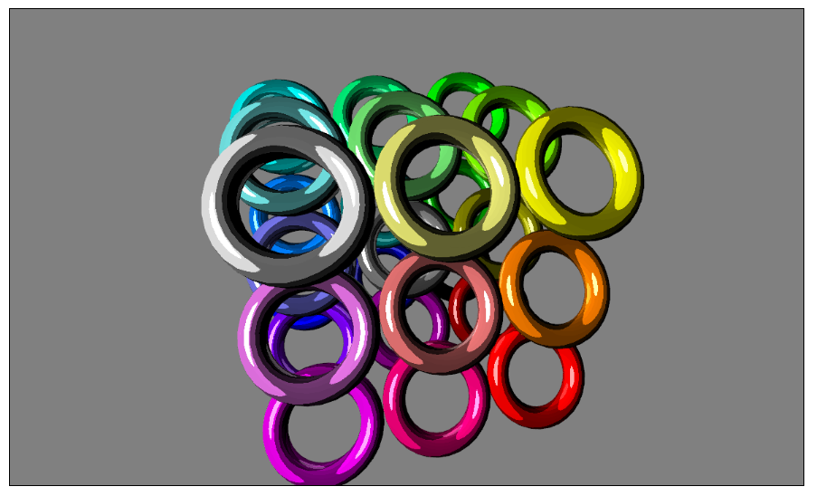
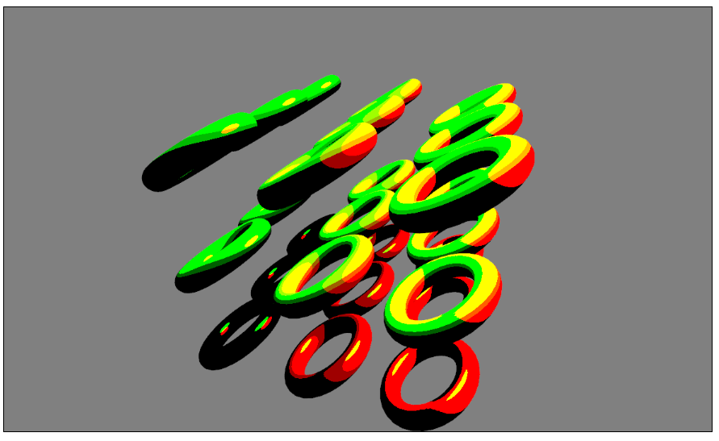
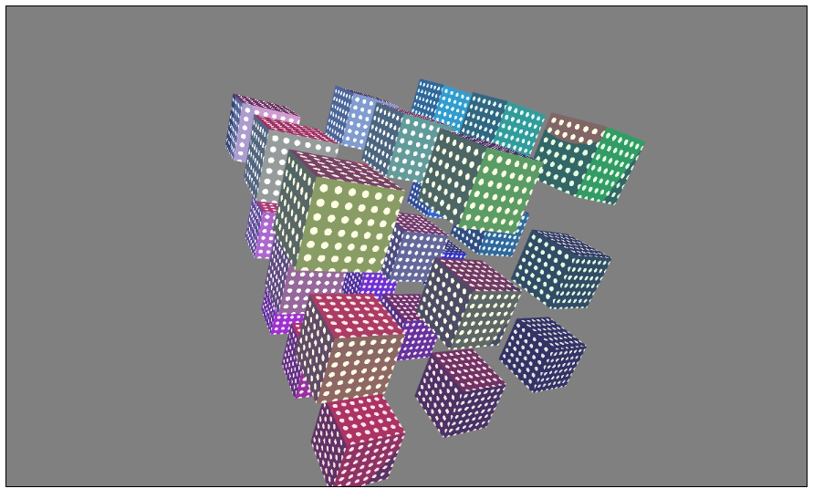

- Use keys 0-5 to switch between shader programs.
- Press 'R' to rotate the tori.
- Press 'C' to switch the 1st ligh color.
- Press 'X' to switch the 2nd light color.
- Press 'T' to toggle the 2nd light animation.
- Press 'I' to increase the 1st light intensity.
- Press 'O' to decrease the 1st light intensity.
- Press 'K' to increase the 2nd light intensity.
- Press 'L' to decrease the 2nd light intensity.
- Press 'Q' to switch the geometry between cubes and tori.
- Press 'W' to increase the texture spacing.
- Press 'E' to decrease the texture spacing.
- Press 'S' to stop movement.
- Press 'Z' to increase the texture color.
- Press 'H' to decrease the texture color.
Aufgabe 3.1
Das nachfolgende Bild wurde mit dem Shader Nummer 3 Erzeugt.
Wie in der Aufgabe vorgesehen werden die Farben nach dem Phong Farbmodell berechnet jedoch in 4 unterschiedliche Intensitäten
unterteilt um den Toon Effekt zu erzeugen.
Diese Unterteilung findet an 4 Stellen statt:
- Es wurde der 3. Fragment Shader angepasst sodass die Intensität der Farbe abhängig
vom Winkel zwischen der Oberflächennormalen und des Richtingsvektors der Lichtquelle ist.
- Die Intensität wird in 4 Stufen unterteilt, indem sie mit einem festgelegten CelBand Faktor (hier 4.0) multipliziert wird,
der Wert der
Abrundungsfunktion_und_Aufrundungsfunktion
der Multiplikation wird dann wieder durch den CelBand Faktor geteilt.
- Es wurde die Lambert Funktion angepasst, die Intensität wirkt sich durch die Änderung auch auf die Diffusebeleuchtung aus.
- Es wurde der Reflektions-Term angepasst umd das Glanzlicht nicht so weich wie beim Phong Model dazustellen.

Aufgabe 3.2
Die nachfolgende Abbildung zeigt 2 verschiedenfarbige Lichtquellen bei dennen die Position animiert ist. Die Farbe und Intensität kann über Tasten beinfflusst werden.
Die Farbe der Lichtquellen ergibt sich aus dem Intensitätsvektor der Lichtquelle, dies wird zur Laufzeit in der Rendering Funktion modifiziert.

Aufgabe 3.3
Die nachfolgende Abbildung zeigt anstelle der Tori Cuben auf dennen der Circle Fragment Shader angewendet wurde.

Sources
Sources der Aufgabe 3 auf GoogleCode
http://www.lighthouse3d.com/tutorials/glsl-tutorial/toon-shading-version-iii/
http://www.informatik-forum.at/showthread.php?91347-Toon-shader
http://people.freedesktop.org/~idr/OpenGL_tutorials/03-fragment-intro.html